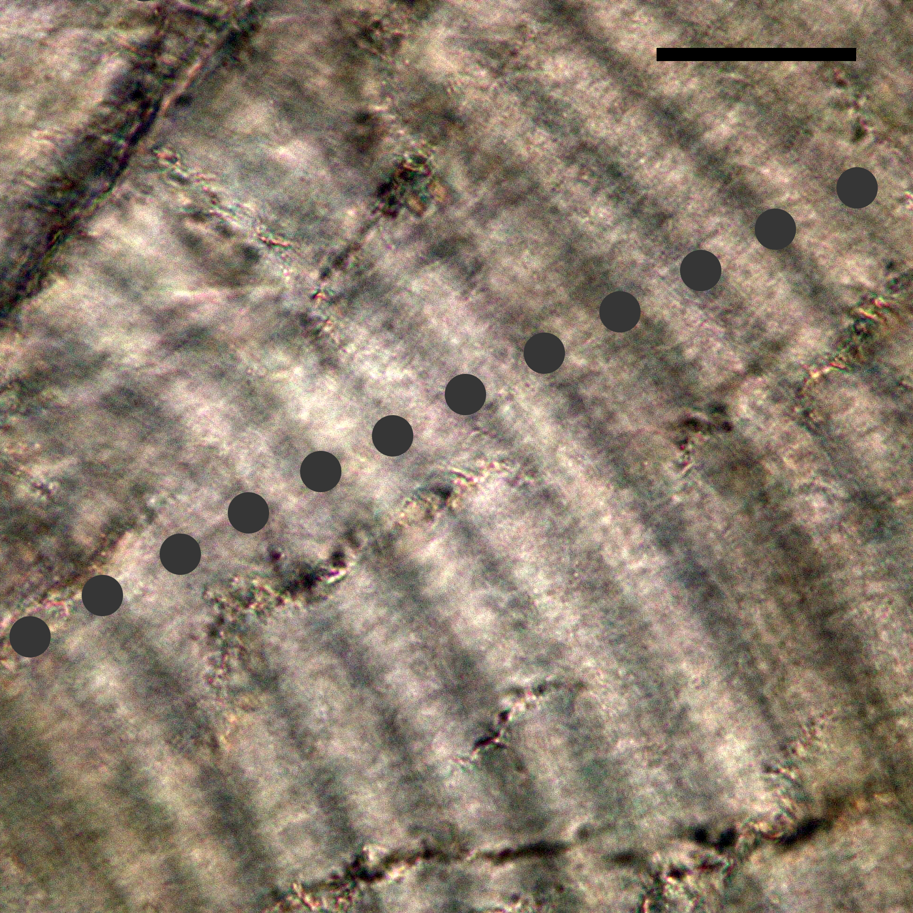

Figure 1. An illustration of Gambusia holbrooki . Drawing by S. Laurie-Bourque.
The introduction and establishment of non-indigenous species are severe issues corresponding with environmental and economic losses, particularly in freshwater habitats. The pest fish, Gambusia holbrooki , is now a prioritized target of eradication from Tasmania. However, there is a limited quantitative analysis of their population dynamics due to little information on fish ageing.
This study centred on the use of otoliths (sagittae and lapilli) to determine daily age for the species. Of 394 fish collected from March to June 2018, 193 (~50%) were successfully aged. Sample preparation was successful for lapilli removed from fish, while preparation of sagittae succeeded for the full range of sampled fish (7mm ≤ TL ≤41 mm). Growth increments appeared as a combination of an opaque and a translucent band in polished otoliths. Ageing reared fish found that increment counts rarely equalled but proportionally correlated to known age. Therefore, estimates of age for wild fish were computed using numbers of increments counted from reading sagittae.
Figure 2. Growth increments as observed in a polished sagitta of a wild fish (TL=19 mm, estimated age=38 days post birth). Scale bar = 20 µm.
A multi-model approach was applied to describe the growth of G. holbrooki versus daily time-series data. Akaike’s information criteria revealed that the power equation outperformed the other candidate models in processing reared fish (Wi = 98% and 59% for females and males respectively) and female wild fish data (Wi = 35%). Von Bertalanffy and logistic equations were best fitted to male fish in the wild (Wi = 27%). Using Pauly's estimator, estimates of the natural mortality rate were 0.035 day-1 and 0.16 day-1 for wild females and males.
It was evident that the birth rate was closely correlated with mean temperature changes in Tasmania with peak reproduction in January 2018. Growth rate significantly differed among cohorts birthed at different times. On average, the means of growth rate estimated for the young cohort (0.28 mm/day) was much greater than that of the over−winter cohort (0.12 mm/day).
The wild sample ranged from fish of TL=13 mm to 63 mm with the mode of length-frequency from 22−26mm. Mature females dominated the population (2.3 female:1 male) and were typically greater than mature males in total length and total weight.
This study, for the first time, provided evidence of using otoliths (sagittae and lapilli) in determining the daily age of G. holbrooki with the opportunity of quantitively examining biological characteristics and the dynamics of a population in Tasmania, Australia; which can be used to inform pest control and eradication programs both locally and globally.
Project deliverables:
- Categories: honour project at University of Tasmania, sponsored by ARC linkage-projects-grant-id-lp140100428
- Status: closed
- Timeline: Dec, 2017 to Dec, 2018